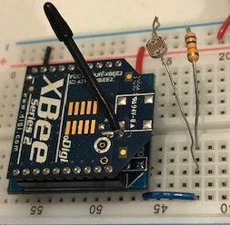
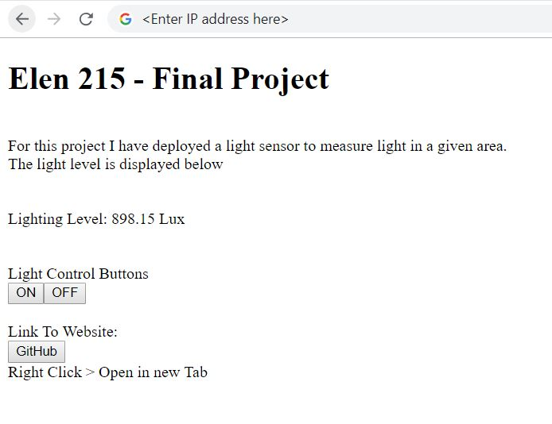
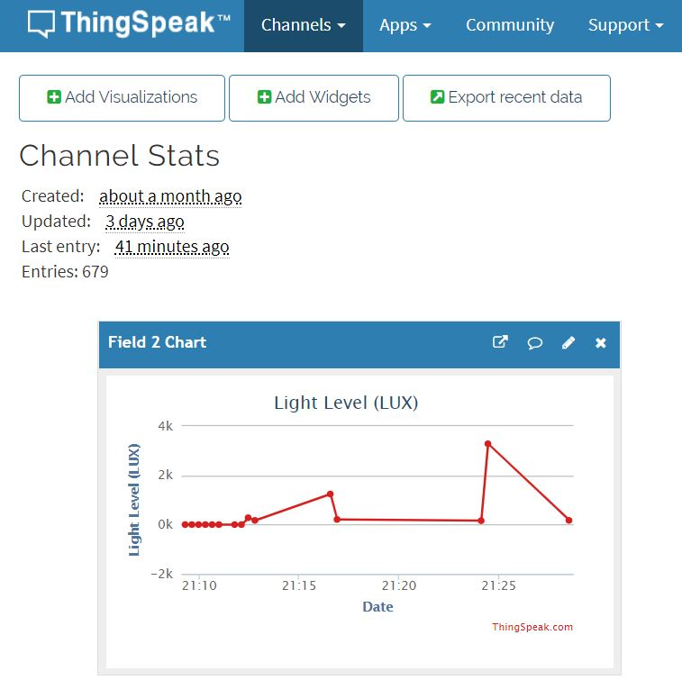
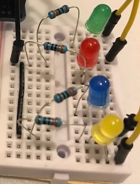

The sensor is a simple set up. It uses a resistor in series with a LDR to create a varying voltage divider to provide an analog reading. The sensor is connected to the XBee router pin IO0

The web server is stored on the arduino. It obtains the IP automatically using DHCP. It displays the sensor data (Lux) transmitted over the network. It uses two control buttons, ON and OFF, to control the Arduino to turn on/off blue LED remotely. It also contains a button to act as a Link to the GitHub hosted website.

The sensor data is also sent to ThingSpeak services via POST request send by the Arduino. Here the data becomes visually represented with a graph. It displays the Lux level as well as the time it was posted.

Each of the four LEDs have a purpose:
Green/Red: The red light will turn on when light levels are lower than 300 Lux, if they are greater than 300 the green LED will be on.
Blue: Remote controlled LED via Arduino webserver.
Yellow: Set to blink whenever XBee data reads analog sample from sensor circuit.